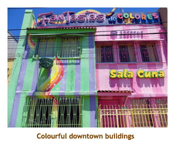
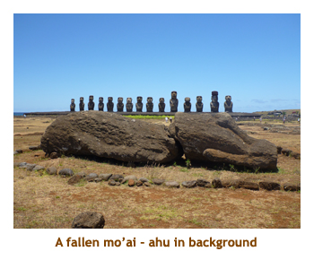
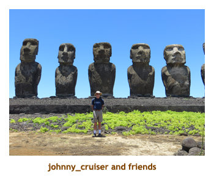
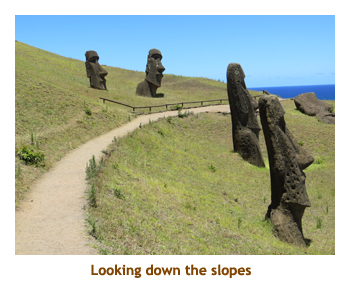
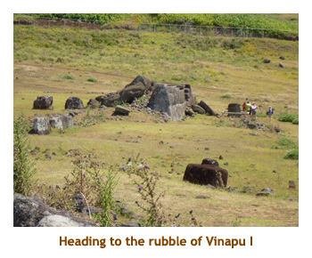
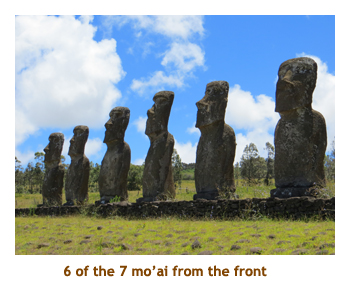
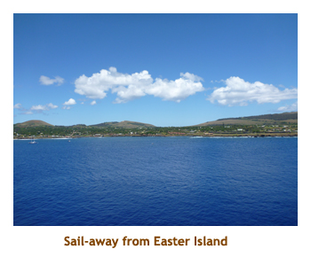

[ Home ] [ Travel ] [ Photography ] [ Pets ] [ Games] [ Rowing] [ Physics ]


Cruising on the Oceania Marina
Travel
Cruises
Past Cruises (Diaries)
Future Cruises
Rogues Galleries
Land Trips
Diaries (Land Trips)
Hawai'i - Big Island - 04'01
Hawai'i - Maui - 05'02
Hawai'i - Big Island - 04'03
Hawai'i - Kaua'i - 09'04
Hawai'i - Big Island - 04'06
Hawai'i - Maui - 04'06
Mainland China - 05'07
Phoenix, Arizona - 12'07
Greek Isles - 05'08
Hawai'i - Kaua'i - 09'08
Hawai'i - Big Island - 09'09
Hawai'i - Maui - 05'12
Hawai'i - Big Island - 04'13
Ireland - 08'13
Mexico - Cancun 11'13
France/Belgium/Lux 07'15
Hawai'i - Big Island - 05'17
England / Wales - 06'17
Hawai'i - Big Island - 09'19
Photography
Cameras
Underwater
Pets
Tara
Blackie
Whitey
Muffy
Ollie
Rusty
Fluffy
Rufus&Dufus
Games
Rowing
Physics
Rating (out of 5): Ship  Food
Service
Itinerary
Food
Service
Itinerary
We had booked this cruise over a year in advance as we were intrigued by the stops at Easter Island and Pitcairn Island. Both islands were on my bucket list. A bit later we added on the French Polynesia B2B and Mike and Stacy signed up for this second leg. The Easter Island leg was 20 days, half of them at sea. So, we didn't expect a particularly active cruise. We were really looking forward to being on the Marina again; we had done 20 days in the Mediterranean in April on the same ship. All in all, we were really looking forward to this cruise. As an added bonus, we had received a cheap offer to upgrade to Concierge Class. I'm not sure I'd pay the full upgrade charge for CC. Not worth it!
There were about 1204 people on the cruise. I say "about" because the actual count changes every day as people join or leave the cruise. The double occupancy capacity is 1250, so the ship was essentially full. There were very few families or children aboard. This was definitely a cruise for the "National Geographic" Tilly Hat crowd, with Easter Island being the highlight. Many of the people we talked to had been to the Galapagos Islands, Antarctica, Spitzbergen, SE Asia, African safaris, etc. Not your typical Caribbean getaway crowd at all! The weather for the cruise was basically sunny and warm. Although Valparaiso is a fair bit south of the equator (30 deg S), our itinerary took us westward with a slight heading towards the equator ending up at 15 deg S. As a result, temperatures were in the high teens at the start (needed a sweater or jacket, especially on those sea days) but about 30 degrees (and humid!) by the time we hit Papeete.
We boarded just a couple days after Christmas so the ship still had all of it's Christmas decorations up. These remained in place until after the New Year's celebration. Starting January 2, each day a few of the decorations disappeared and by the time we got to Pitcairn Island, no trace of Christmas remained. The decorations were quite extensive - I wonder where they put them all?
The dining on the ship was wonderful. Oceania still offers the four specialty restaurants free of charge. Guests are guaranteed one seating in each venue with additional seatings as space permits. We managed to squeeze in 10 seatings during the cruise so were able to sample a variety of things from the specialty menus. They were all good, but I think that the Red Ginger (Asian fusion) was our favourite. Once again I was able to bring local beer aboard that I purchased in the ports. We were given 2 bottles of champagne for different reasons and were able to trade them in for bottles of house white in the restaurant.
As a last observation, this cruise was a "tendering" cruise. Our only docking
facilities would be at Valparaiso and Papeete. All ports in between would be
tendering ports. This always adds an extra variable when going ashore,
especially with private tours. By the end of the cruise it was so nice to have
a gangplank at Papeete!
Pre-cruise (Dec 26) - Travel to Valparaiso

We were up at 5:00 AM and picked up by the airport shuttle at 6:00 to get to the airport by 6:30. Our air itinerary was quite complicated with four separate legs - lots of opportunity for things to go wrong! We had done the direct flight from Toronto to Santiago before, but Oceania, in their wisdom, booked us Calgary to Toronto to JFK to Lima to Santiago! All going well we would arrive in Valparaiso at about 4:00 PM on Dec 27 and immediately board the ship. The flight to Toronto left half an hour late at 8:30 AM which worried us due to a very short connection time in Toronto. We landed at 2:30 PM and there was no way we could make the connection. However, fate was on our side and our connecting flight to JFK had been delayed as well, by 2 hours! This second delay was not as worrisome as we had 5 hours to connect in JFK. We had plenty of time to do US customs and security before boarding our JFK flight at 5:00 PM. This flight was only 1.5 hours and we were in JFK by 6:30. Here we got our biggest shock. The LAN flight to South America (Lima) supposed to leave at 10:45 that night was cancelled due to a storm in the US northeast. Marjorie called the airline and found out that we had been rebooked on a 12:20 PM flight the next day. The impact to us was that we would have to find a hotel for the night, and then arrive in Valparaiso by early morning on Dec 28. We would miss the first day of the cruise! Fortunately, the cruise started with an overnight in Valparaiso, so the ship would still be there when we arrived on the 28th. We got a nice room at the Airport Doubletree and actually got to sleep in.
Note: LAN has a small presence at JFK and shares their check-in
facilities with United Airlines. Because the (only) flight was cancelled,
LAN had no check-in agents on duty that night. There was no one there to
talk to. There must have been at least 100 originating passengers with all their luggage
queued up to check-in but no one to service them. They had no idea what
was happening - it was a real schmozzle! I think most of them ended up overnighting
at the airport. Because we were connecting, our luggage was already checked
through to Santiago, so the hotel was a great option for us.
Day 1 (Dec 27) - Supposed to be in Valparaiso!
We enjoyed our stay at the Doubletree, even though we were supposed to be leaving for Santiago.
One pain was that our luggage was checked through to Santiago, so we couldn't access it for our
hotel stay. The next morning we still had the same clothes! We shuttled back to the airport for our
12:20 PM departure time. We recognized a lot of the passengers from the previous night. And, of course,
the flight was late taking off, leaving at about 1:00 PM. The flight was long but uneventful to Lima, Peru. We
landed there about 9:00 PM. About 80 percent of the passengers deplaned there. No one seemed
to get on. We were not changing aircraft so were required to stay on board. The stop was supposed to be 1 hour,
but, what's new, we were 1.5 hours on the ground, leaving for Santiago at 10:30. We finally landed in Santiago the next
morning at about 4:00 AM. Even though we flew directly south from Lima, we had to change our watches
2 hours forward in Santiago. One hour was daylight saving and the other was a quirky time zone.
Day 2 (Dec 28) - We finally make it to Valparaiso
We went through Chilean customs, paid the exorbitant "receprocity fee" ($132 each), grabbed our bags
and boarded the bus to Valparaiso. It was about 5:00 AM, so the sun was coming up as we drove the 1.5
hours to Valparaiso. It was daylight by the time we reached the port. We checked in at a terminal building
about a mile from the ship. After checking in, we reboarded the bus and were driven along the dockside
to the ship. It was secured with chain-link fencing the whole length of the docking area except for a section
right next to the ship. There
was a public section of the dock with fishing boats, and on the other side of the dock
was a very interesting town square with
colourful colonial buildings. We decided we would visit the square later in the day. So, at 7:00 AM, 49 hours after
leaving our house, we walked aboard the beautiful Marina and went to bed! We were beat!

We went right off to sleep and woke up somewhat refreshed about 11:30 AM. It was sunny and 21 degrees.
Our suitcases had arrived so we emptied them and hung up our clothes. Then it was off to lunch at the
Terrace Grill (buffet) with a milkshake from Waves. After lunch we headed off the ship with the intention of
visiting the town plaza (right next to the ship). However, for security reasons, you could only board a shuttle bus
as soon as you reached the dock. The bus took us back to the terminal building - a good mile or so from the
town plaza! As we were tired plus not interested in the mile walk through the industrial area, we opted instead
to cross the street to an indoor mall where we found a grocery store and bought beer and juice for the trip.
The beer was local stuff and was $6.00 for a six-pack. We headed back to the shuttle and were back on the
ship by 3:30. We sat and read on our balcony, in the sunshine. Muster drill was pushed back from 5:15 to 5:45
due to another late plane load of passengers. Sailing was pushed to 6:30. We had our first "specialty restaurant"
dining at Jacques. I had the Coquilles St. Jacques and it was excellent. We played trivia at 8:30
(won 2 BIG-O Points each) and then went to bed.
Day 3 (Dec 29) - The first of many days at sea
This was our first sea day. The routine was similar for each of our many sea days, so I'll only mention the standard routine once. Our time to rise was generally 6:00 to 7:00 AM. I usually went to the gym and then met Marjorie for breakfast. We split our breakfasts between the Terrace Grill (buffet) and the main dining room (MDR). We really enjoyed the MDR especially on those days where we didn't need to hurry. Marjorie liked playing shuffleboard, so we always went in the shuffleboard competition at 10:00. There were often 2 onboard lectures each morning. Sometimes we did one, sometimes both. They were very good and were specific to our itinerary. Lunch was also split between the buffet and the MDR. I often grabbed a milkshake from Waves and took it to the restaurant.
The afternoon was filled with mini-golf, reading, playing games (I brought Ticket to Ride, Dominion and Sticks), and
trivia sessions. Plus we always enjoyed just wandering the ship. Tonight dinner was in the Polo Grill where I had
fillet and lobster tail. We played evening triva. The entertainment was a 1960's song and dance review, but we
opted for an early night.
Day 4 (Dec 30) - A day on Robinson Crusoe Island
After our day at sea, we arrived at Robinson Crusoe Island. This is where Alexander Selkirk
had been marooned in 1704 and provided the idea for Daniel Defoe's famous novel. We anchored
about 8:30 as we were having breakfast. This is a small island with only about 600 inhabitants,
so there were no tours offered. The island has no surrounding reef, so the snorkeling is poor. As
a result, we lazed around the ship until 10:00 and then tendered over to the island. It was sunny
and about 18 degrees, but a bit windy. We walked around the village that was built up the slopes
of the central mountain. Things were very basic, although some of the roads were paved. There
was some rebuilding going on as the town had been devastated by a tsunami in 2010. We walked
past a brightly decorated cemetery to some sea caves where we could see some sea lions
playing in the surf.
In the village itself there were some interesting places and buildings. A brewery was operating out of a villager's house. He got a few clients from our ship. There were a couple of restaurants and "pisco sour" bars in very basic wooden buildings. As we have seen in other small "welfare" villages throughout the world, there tend to be facilities that are beyond the means of the village. Here there were two very large park areas with lovely gardens, pathways, benches and childrens play equipment. There was also a brand new, full size astro-turf soccer pitch. I don't think they could even raise two teams to play! It didn't take long to walk through most of the village, so we were back to the ship by about 1:00 PM. We had a late lunch and then sat in the sunshine and read. Afternoon trivia was at 4:30. We sailed at 6:00. Dinner was at the Red Ginger. I had rack of lamb (how Asian is that!). Trivia was at 8:45. The entertainment was a singer who also played trumpet (but not at the same time). We turned our clocks back one hour.
Note: Two wonderful people we got to know on the cruise (Bill
& David) were the first passengers to get off of the first tender, and were
welcomed by some exuberant dogs causing some wounds on their arms. They
were taken by a national parks person to a "hospital" where they were cleaned
and bandaged up. The locals would not take any money for the service and
even took them on a complementary 4-wheel drive tour of the island for the
day.
Days 5 - 8 (Dec 31 - Jan 3) - Four days at sea
Our next port of call was to be Easter Island. However, it is situated miles from anywhere, so we had a 4 day sail (about 2500 nautical miles) to get there - 4 days of nothing but ocean! The sea days were typical as per Dec 29 above, so I'll just mention the unique things.
Dec 31 - Lecture on the Easter Island Moai. Dinner at Toscana - I had veal picatta. There was a New Year's dance party on the pool deck, but rain forced it in to the Horizon Lounge. We did not attend, but apparently it was very crowded there.
Jan 1 - Laundry day (Marjorie's favourite). Lectures on coral reefs and Captain Bligh. Mini-golf tourney, Marjorie tied for third place. Dinner at the MDR - I had pork medallions. Entertainment was a comedy juggler.
Jan 2 - Lectures on mapping the world, astronomy and turtles. The astronomy lecture
was given by one of the passengers. Dinner was in the MDR - I had prime
rib. Entertainment was song and dance so we didn't go.
Jan 3 - Lectures on navigation and French possesions in the South Pacific. Dinner was in the
MDR - I had cod fillets. Entertainment was the singer/trumpeter guy again. We didn't go.
As we sailed towards Easter Island, we were edging closer and closer to the Equator. The weather was kind of mixed, with sunshine, clouds and some pouring rain showers. However, each day it was getting noticibly warmer. It was great weather for the pool crowd, however I found it a bit too warm to sit out when the full sun was out. Fortunately our balcony was nice and shady. During the sea days I also discovered the surf and turf "burger" at Waves. This was a tender beef fillet cut into 3 chunks with slices of lobster in between served on a Ciabatta bun. I didn't care for the bun, so ordered it with no bun. I don't know how many times I had surf and turf and a milkshake for lunch. Heaven!!
Note: The comedy juggler and trumpeter guy each performed three different evenings.
In our daily cruise guides the second and third shows were prefaced with "Back by Popular Demand ..."
when in truth they were performing multiple times because they couldn't get off the $#@* ship!
Day 9 (Jan 4) - Easter Island - Part I
Easter Island is a small island of only 117 square kilometers, owned by Chile. You could fit 6.7 Easter Islands into the city of Calgary (784 square km). This was a tendering site (no large dock). Like R.C. Island, there is no surrounding reef, so snorkeling is poor. Our itinerary included two full days at Easter Island. Before the cruise we teamed up with a group of 10 other passengers to do a 2-day private tour of the island. As it turned out, that was about the right amount of time to do the island in real detail. First, some terminology. Rapa Nui is the Polynesian name for Easter Island (Isle de Pascua in Spanish), as well as the name of the native people and the name of the native language. Hanga Roa is the name of the main (and only) village on the island. There are about 5,000 islanders of which about 2,000 are Rapa Nui (the others being mostly Chilean). The huge carved statues are called Mo'ai. Many of the mo'ai have been placed on stone platforms called Ahu. Ahu are the equivalent of heiau (Hawai'i) or marae (Tahiti). There are almost 900 mo'ai on the island, of which around 300 were placed on ahu's. About 400 are still in place in the quarry. The rest of them were abandoned between the quarry and their unsuccessful destination. When Europeans first reached Easter Island in the 1700's, many of the mo'ai were still standing. By the 1800's, tribal warfare had toppled all of the mo'ai. So, the ones you see standing today have been repaired and re-erected as they are assumed to have once been. A few of the mo'ai still sport a Pukao (or topknot) on their head; these were carved out of red scoria, a very light rock from a quarry at Puna Pau.
We were up at 6:30 for an early breakfast. It was sunny out and would be about 25 degrees. Perfect! We had ordered some sandwiches from room service for lunch and packed them and drinks into our back pack. We got to the theatre at 8:00 AM for tender tickets, but had to wait 1.5 hours until the ship's tours had cleared. We finally tendered at 9:30.
We met up with our guide on shore and set
off for the day. We had a few housekeeping stops to make such as picking
up bottled water from the grocery store, then we were on our way.
The first stop was at Ahu Tahai, quite near the ship. Tahai
comprises 3 separate ahu. Two of the ahu have just a single mo'ai, one of
them being the only mo'ai on the island with restored eyes. Apparently
the mo'ai had eyes made out of white shells and black rocks (for pupils).
The other ahu
had a row of 5 mo'ai, in various stages of disrepair. Traditionally, the
mo'ai face with their backs to the ocean, so they may look over the
village that they are meant to protect. Nearby the site is a
modern day cemetery. Buried there is the American archaeologist who
did the restoration of the site in 1974. Also nearby are traces of the village
that was protected by the ahu. And, of course, at the edge of the site
were a few Rapa Nui with tables of souvenirs for sale.
Our second stop was at Anakena Beach. Anakena is a white coral sand beach and has two ahu - one with a single mo'ai and the other with seven. Anakena is unusual for Easter Island in that it is one of only two small sandy beaches in an otherwise rocky coastline. According to island oral traditions, Anakena was the landing place of Hotu Matu'a, a Polynesian chief who led a two-canoe settlement party here and founded the first settlement on Rapa Nui. Anakena featured in the Tangata manu or Birdman cult as in years when the new Birdman was from the western clans, he would end his celebrations at Anakena.
We walked around the ahu first, and then explored the sandy beach. We were given the
opportunity to swim, but the group decided not to. Instead we walked up to the picnic area and attacked
our drinks and sandwiches. It really was a beautiful beach with the white sand and the turquoise water.
Our third major stop of the day was at Ahu Tongariki. Tongariki is the largest ahu on Rapa Nui. Its moai were toppled during the island's civil wars and in 1960 the ahu was swept inland by a tsunami. It has since been restored in the 1990's and has fifteen mo'ai including an 86 tonne mo'ai that is the heaviest ever erected on the island. Ahu Tongariki was the main centre and capital of the Hotu Iti, the eastern confederation of the Rapa Nui.
The site of this ahu was a huge flat plain, bounded by the ocean in one direction
and the remains of an extinct vocano in the other. The ahu itself was enormous.
We were able to walk around the whole structure. The mo'ai
were various sizes, with one of them (at 86 tonnes!) being the largest ever erected. There are larger
mo'ai still at the quarry, but these were never completed, moved or erected. Scattered around
the site were some pukao - the red topknots that sit on the Mo'ai's heads. Even these were enormous
rocks, weighing up to 10 tonnes. Putting one on the head of an erected mo'ai would be some feat! One of the mo'ai that was
moved inland by the tsunami was left where it lay. The power of the tsunami must have been immense.
As we left the site we passed by an area where pukao were lined up. These had not been replaced
on the heads of the mo'ai. An almost naked native was
moving some rocks with a crowbar - I don't know what he was up to. Hopefully not trying to put one on his head.
|  | |||
|  |
Our fourth and final major stop of the day was at Rano Raraku on the slopes of an extinct volvano. Rano Raraku was a quarry for about 500 years until the early eighteenth century, and supplied the stone from which about 95% of the island's known monolithic sculptures were carved. There are 347 incomplete mo'ai in the area. The incomplete statues in the quarry are remarkable both for their number, for the inaccessibility of some that were high on the outside crater wall and for the size of the largest; at 21.6 m (71 feet) in height, almost twice that of any mo'ai ever completed and weighing an estimated 270 tonnes, many times the weight of any successfully transported. Some of the mo'ai seem to have been abandoned after the carvers encountered inclusions of very hard rock in the material. Others may be sculptures that were never intended to be separated from the rock in which they are carved. On the outside of the quarry are a number of mo'ai, some of which are partially buried to their shoulders in the spoil from the quarry. They are distinctive in that their eyes were not hollowed out, they do not have pukao and they were not cast down in the island's civil wars. For this last reason, they supplied some of the most famous images of the island. The mo'ai that ended up being erected on the ahu were probably "roughed out" in the quarry and then more finely sculpted in situ on the ahu.
|  | |||
 |
Our day was wrapping up now and we headed back into town. There was still some time left on the meter, so we asked if we could stop in at the Catholic Church in town. We had passed it earlier and it looked very interesting. Our guide had no problem with that and we stopped for about 1/2 hour to wander through the church. It had interesting wood carvings of saints, etc. and beautiful stained glass windows. Then we headed back to the tender dock arriving about 4:30 PM. We tendered back to the ship, too late for trivia! We ate in the MDR and I had beef tornadoes. We played evening trivia, but skipped the entertainment. The sandwich lunch worked well today, so we phoned room service for delivery of more sandwiches tomorrow morning.
Note: The
kitchen wouldn't make up a "brown bag" lunch. The sandwiches were delivered on a plate and so we
put them into ziploc baggies. It was quite hot in the full sun, so we also filled a baggie with ice and
a face cloth and wrapped it in a
towel (with a can of Coke) for our back pack. By the afternoon, we had an ice cold face cloth
(oh, that felt good!) and an ice cold Coke.
Day 10 (Jan 5) - Easter Island - Part II
On our second day at Easter Island, we woke up to another hot, sunny day. We had breakfast and then headed to the theatre for 8:30. When we arrived there our group were already gone. Fortunately, our agreed upon time to meet the guide was 9:30. We caught the next shuttle and were to the docks by 9:10. There was still one person missing from the group, so Marjorie and I weren't the last ones to show up! The tender immediately after ours was "reserved" for a lady who had broken her leg. There was an ambulance waiting to take her to the hospital. Our group was finally all present and we headed off for the day.
Our first stop was not to far from town, at the mountain called Rano
Kau. Rano Kau is a 324 m (1,063 ft) tall extinct volcano that forms
the southwestern headland of Easter Island. It was formed of basaltic lava
flows in the Pleistocene with its youngest rocks dated at between 150,000
and 210,000 years ago. Rano Kau has a crater lake which is one of the island's
only three natural bodies of fresh water. We spent about half an hour
wandering around the rim of the crater.
After leaving the crater, our next stop was at 'Orongo.
Until the mid-nineteenth century, 'Orongo was the centre of the birdman cult, which
hosted an annual race to bring the first manutara (Sooty Tern) egg from the islet of
Motu Nui to 'Orongo. Participants (one from each tribe) would scramble down
the rocky slopes, swim across to the island, collect a tern's egg and then swim
back again. The winner would earn the right for his tribe to rule the island for the
next year. The site has numerous petroglyphs, mainly of tangata manu
(birdmen). On the grassy slope are 53 stone masonary houses that were
occupied each year by the competitors for a week or so before the competition.
Leaving the birdmen behind, we drove back down the slopes of Rano Kau and along beside part of the two mile long runway of the airport. Due to the location of Easter Island, it was an ideal site for an emergency landing spot for the NASA space shuttles. Hence, the runway is far longer than necessary for the regular air traffic. Our next stop was at Ahu Vinapu. The ceremonial center of Vinapu includes one of the larger ahu on Rapa Nui. The ahu exhibits extraordinary stonemasonry consisting of large, carefully fitted slabs of basalt. Thor Heyerdahl believed that the accurately fitted stonework showed contact with Peru, but both Vinapu I and Vinapu II were constructed earlier than 1440 and similar work only shows up in Peru after 1440. The stone wall faces towards sunrise at Winter Solstice. Another ahu sits nearby.
The two ahu here were heavily damaged. None of the toppled mo'ai had been
repaired or re-erected. The site was again a large grassy plain. Towards the ocean was
a herd of dairy cows. We had about an hour to wander around this large site.
|  | |||
As we drove away from Ahu Vinapu, we ate our lunch in the van. The lunches were a great idea as it saved us a lot of time for seeing more sites and wandering around longer. Our next stop was at Puna Pau. Puna Pau was a quarry in a small crater or cinder cone on the outskirts of Hanga Roa. It was the sole source of the red scoria that the Rapa Nui used to carve the pukao (topknots) that they put on the heads of some of their iconic moai statues.The stone from Puna Pau was also used for a few non-standard moai including Tukuturi and also for some petroglyphs.
We had about an hour to wander around the quarry. I must admit that the pukao
were nowhere near as interesting as the mo'ai - something about a face. By the
parking lot was a flowering tree. It had a lovely flower, but I have no idea what the
tree is called.
Our final destination of the day was at Ahu Akivi. Ahu Akivi is an ahu with seven moai, which were restored in 1960. Ahu Akivi also gives its name to one of the seven regions of the Rapa Nui National Park.The mo'ai face sunset and have their backs to the sunrise during Spring and Autumn Equinox. Unlike other ahus, the Akivi-Vaiteka complex is not located on the coast. In contrast to the monumental statuary at other sites on the island, the moai at Ahu Akivi face the ocean.
We were given about an hour to walk around this site. Once again it was a very large site, but this time
quite a distance from the ocean. Near the parking area a couple of families had souvenir tables set up.
|  |
 It was mid-afternoon by this time, but the group had had enough touring. So, we headed back to the tender dock. Saying goodbye to the guide, we jumped on the next tender and headed to the ship. It was about 3:00 PM and very warm out. We dumped our stuff off in our room and headed up to Waves for a milkshake. That was great! We played afternoon trivia and then watched sail-away at 6:00 PM. It was kind of sad leaving the island after spending two 8 hour days exploring every corner of the island. Now we would spend another two sea days sailing to Pitcairn Island. Dinner was at Red Ginger (our second visit to RG!) - I had beef teriyaki. We skipped the entertainment (song and dance) and played Sticks instead. The clocks went back an hour tonight, the first of five nights in a row.
Days 11, 12 (Jan 6, 7) - Two more days at sea
Day 13 (Jan 8) - Attacked by Pitcairn pirates
Going ashore at Pitcairn Island.
Pitcairn is a small island with a population of less than 50 people. The infrastructure consists of a small landing dock, an access road up into the town, a general store, a school and a few houses. That's it! The island is supported as a British colony, but the actual administration comes from New Zealand. The islanders are "on the dole" from Britain (there aren't any jobs there!). Supply ships come in 3 or 4 times a year and, apart from 4 or 5 cruise ships, that's it!
We were having good weather with light seas and had no problems tendering into Robinson Crusoe Island or Easter Island. However, even though the seas seemed to be OK, we were told that the local port authority (ie. one of the islanders) had closed the tender dock as it was "too rough". This did not come as a surprise as we had researched on the Web and found no other ships that had made it in either. We were told this about 7:30 AM as the tendering process was about to start. Magically a few minutes later a fully loaded "long boat" left the island with 37 islanders aboard plus loads of handicrafts. (They packed the long boat pretty quick???) Only about 10 kids and elderly remained on the island. Rope ladders were let down from the ship and the islanders came aboard.
The Pitcairners set up shop in the large Horizons Lounge, with tables to display t-shirts, wood carvings, jewellery, paintings, postage stamps, etc. The stuff was good quality, but very expensive. For example, to get a "fake" Pitcairn customs stamp in your passport it was $10. T-shirts were about $30. Regardless, there was a buying frenzy from the crowd and the islanders took in literally thousands of $US. A lot of the tables were depleted. At lunch time the islanders were fed in the Terrace Caf (buffet) and treated to a live band on the pool deck. They were also allowed to visit the onboard shops where they cleaned out all the chocolate bars, toys and toiletry items. One of the women gave a very interesting lecture about life on the island. When it came time to leave the ship, they loaded supplies from the ship - frozen turkeys, cans of ham, bags of flour, rolls of carpeting, cans of paint, etc. The long boat was stuffed! We never did hear if the ship donated the stuff or if the Pitcairners had ordered the stuff from Chile (or if they were actually Somalian pirates). This was a real heyday for the Pitcairners!!
Thinking about the alternative if we had gone ashore and wandered the town, what would have been in it for the islanders? Nothing! Maybe a few sales of handicrafts but that's about it. By just closing the tender port, they had a "captive audience" - making a bundle of money and gaining useful supplies. For that reason I suspect that no cruise ship will ever arrive when the port is open. There is too much for the islanders to lose out on.
Note:
The observations stated in the above write-up are my own plus that of many
other passengers whom I talked too. All had come to the same conclusion
that the islanders did extremely well from our visit on the ship. However,
these are passenger impressions and not corroborated by the captain or crew
who did not speak publicly of the incident.
To continue the diary. We were up early at 6:00 AM thanks to setting the clocks
back. I headed up to the gym for a workout. Afterwards we wandered to the MDR
for breakfast. While we were eating, the ship dropped anchor only to be followed by
a message from the captain that the locals had closed the port due to rough seas.
That was certainly disappointing for all of us who wanted to go ashore. Instead, the locals
would be coming to the ship and setting up shop in Horizons Lounge. Thirty seven
of the islanders arrived, including a police officer supervising one islander out on a
day pass for some sex crime. The police officer was from New Zealand and assigned
to the island for a year. After setting up their displays the souvenir sale was kicked off.
There were so many passengers
browsing and/or buying stuff that Marjorie and I took a quick look and then left. At
10:00 we attended a talk given by one of the islanders and it was very interesting.
Then we headed back up to Horizons to catch the tail end of the sale. Not much
was left as the sale was extremely successful. We went for lunch and then waved
off the islanders as they headed back to the island. In defference to those of us
who couldn't go ashore, the Captain sailed completely around the island.
We played afternoon trivia and then had dinner at the MDR. I had jumbo shrimp
(again). Then it was evening trivia and time to turn our clocks back again.
Days 14, 15 (Jan 9, 10) - And another two days at sea
Day 16 (Jan 11) - Melting in Fakarava
We were up at 6:30 to watch us anchor in the lagoon. I headed up to the gym and
then we had breakfast. It was our hottest day yet - 30 degrees and extreme humidity.
We tendered to the little village and walked up and down the main street. We found
an internet cafe, but you had to bring your own laptop. We didn't last long in the heat
and tendered back to the ship for lunch. We had intended to try snorkeling, but decided
against it. I talked to a number of people afterwards who went in off a beach and they
said it was very good. After lunch I read, while Marj grabbed the
laptop and tendered back to town. It turned out that the cafe was out of internet tickets
(???) so Marj was out of luck. This was to be our experience throught FP. Plus, when we
did find a cafe that actually worked, the keyboards were French and the letters
were all mixed up. Later we played afternoon trivia. Dinner was in the MDR. I
had roast beef. Then it was evening trivia. The comedy juggler had finally left
the ship and was replaced with - wait for it - another comedy juggler. He was quite good
and did different stuff than the previous guy.
 |
Day 17 (Jan 12) - A final day at sea

Today was our final day at sea as we steamed towards Bora Bora. It was quite hot out today.
We had breakfast in the MDR and then played some shuffleboard. I think Marjorie beat me. Then
we read our books for a while. At 11:00 there was a lecture on WWII in the South Pacific. We
had lunch at the buffet (milkshake and surf & turf). We sat out on our balcony and read some
more. Marjorie gave in to a game of Ticket to Ride and it was refreshing to sit in the cool of the
games room. At 4:30 it was afternoon trivia. We were building a pretty good collection of
BIG-O Points, saving up for a free cruise. Dinner was at
Red Ginger again. I actually can't remember what I had, but I am sure it was good!
We did our usual at evening trivia and then went to the entertainment. It was a
classical guitarist who played Latino music with a prerecorded background. He was
an awesome guitar player and I would have enjoyed hearing him play some
acoustic classical pieces. I didn't really care for the Latino stuff.
Day 18 (Jan 13) - Visiting Bora Bora Part I
Day 19 (Jan 14) - Visiting Bora Bora Part II
Day 20 (Jan 15) - A tour around Moorea
Our next stop was at the house of the Kellem family. The Kellums first came to Moorea in 1924 onboard a 170-foot schooner. They settled on the shore of Opunohu Bay and their beautiful home and gardens have been part of the local landscape ever since. Mari Mari Kellum (granddaughter) was on hand to host cold drinks on the lanai and talk about the story of her fascinating family. The gardens were really beautiful with a large variety of tropical plants. Then we headed back into the village to visit the Richard Gump South Pacific Research Station which has become the premier US scientific institution in the South Pacific. The focus of the institute is marine life biology. One student showed us his project studying Cleaner Wrasse behaviour. We were then dropped off at the tender dock and we were back onboard by 1:00 for lunch. After lunch it was laundry time combined with reading time. Then we played some shuffleboard. There was no trivia in the afternoon; it was replaced with a half hour of trading in BIG-O Points for merchandise. We decided not to go and save our points for the next leg where we could give them to the kids. By the late afternoon it had come over very cloudy and rained in the evening. We upped anchor and sailed at 6:00 PM and would be docked in Papeete 2 hours later at 8:00 (the ferry does it in 45 minutes!). Dinner was in Toscana and I had veal picatta. We arrived in Papeete as we were eating. Docked right next to us was the Octopus, Paul Allen's private yacht. We did not attend the song and dance show.

|
Day 21 (Jan 16) - Turn around day in Papeete